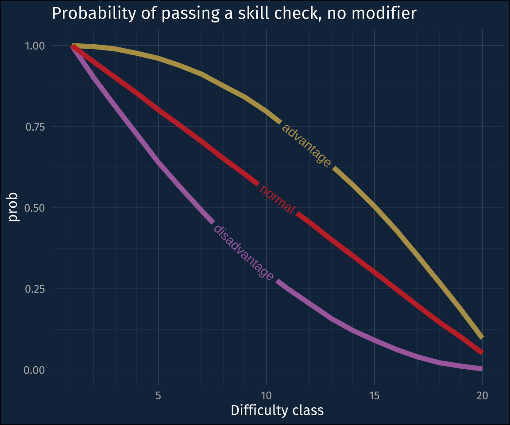

library(tidyverse)
library(geomtextpath)
library(khroma)
library(droll)
source(here::here("_defaults.R"))I’ve recently started playing Dungeons and Dragons, and have been really enjoying the campaign my sibling runs. I’m still getting a handle on the mechanics, especially in combat, where the sequence of events that are allowed, and keeping track of your what you roll when is still a little confusing to me. Even though it’s not playing out in real time, it feels urgent, and I don’t always keep track of things like “Am I rolling with advantage?”, “Do I have bardic inspiration” etc.
But in the time in between sessions, in addition to thinking through the mechanics to remember, I’ve also been thinking about the probabilities of it all. And what do you know! There’s an R package for that: {droll} !
Simulating rolls
The {droll} package works seems to be explicitly built to compatible with the DnD directions work. For example, you might roll a 20 sided die, or a “d20”, and add an ability “modifier” to the result. In droll commands, we’ll create a d20, set a dexterity modifier, then roll a random value then add that modifier:
set.seed(12)# make a d20
d20 <- d(20)
# low dex
dex <- 1
d20 + dex[1] 3Another thing you might do is roll multiple dice, then add the result together. For example “roll 3d8” means you roll three 8-sided dice, then add the result together for something to happen.
d8 <- d(8)
3 * d8[1] 17Distributions
It also comes with a few probability distributions built to get the density, cumulative probability, and quantiles of die, which might already be familiar to some R users. Here’s the density distributions of rolling 1, 2, 3, and 4 d8s.
## A function to make a tibble
## of n rolls of a die.
make_roll_tibble <- function(n, die){
nfaces <- max(die@faces)
tibble(
rolls = n:(n*nfaces),
faces = nfaces,
density = droll(rolls, n*die)
)
}## Constructing the roll densities
tibble(n = 1:4) |>
mutate(
roll_df = map(
n,
# new R anonymous function
\(n) make_roll_tibble(n, d8)
)
) |>
unnest(roll_df) ->
roll_densities## plotting the roll densities
roll_densities |>
mutate(
nd = str_c(n, "d", faces)
) |>
ggplot(aes(rolls, density))+
geom_area(fill = "grey90")+
expand_limits(x = 1)+
facet_wrap(
~nd,
scales = "free_x"
)+
labs(
title = "Density distributions of 1 through 4 d8 rolls"
)Advantage vs Disadvantage
One mechanic in DnD is rolling with “Advantage” vs rolling with “Disadvantage”. If you have advantage (say, because an enemy is restrained), you roll two d20s and take the highest value. If you roll with disadvantage (say, because you are restrained), you roll two d20s and take the lowest value.
There’s not a straightforward way to get the advantage vs disadvantage rolls, but I figured out a way to do with with some tidyverse tricks.
## Set up the number of rolls
nsims = 10000
nrolls = nsims * 2
## Initial tibble with
## random rolls
tibble(
roll_id = 0:(nrolls-1),
roll_value = rroll(nrolls, d20)
) |>
## convert to roll groups
mutate(
roll_group = floor(roll_id/2)
) |>
## group
group_by(roll_group) |>
## number the rolls
mutate(
roll_num = row_number()
) |>
## Get advantage,
## disadvantage
## and first roll
summarise(
advantage = max(roll_value),
disadvantage = min(roll_value),
normal = roll_value[1]
) ->
simulated_rolls
head(simulated_rolls)# A tibble: 6 × 4
roll_group advantage disadvantage normal
<dbl> <dbl> <dbl> <dbl>
1 0 12 3 12
2 1 16 2 16
3 2 17 5 17
4 3 16 12 16
5 4 8 2 2
6 5 11 1 1Next step is to count up how many of each value we got, which requires pivoting.
simulated_rolls |>
pivot_longer(
cols = advantage:normal,
names_to = "roll_type",
values_to = "roll_value"
) ->
rolls_long
head(rolls_long)# A tibble: 6 × 3
roll_group roll_type roll_value
<dbl> <chr> <dbl>
1 0 advantage 12
2 0 disadvantage 3
3 0 normal 12
4 1 advantage 16
5 1 disadvantage 2
6 1 normal 16After pivoting long, I’ll calculate the cumulative probability that a player will pass the skill check.
rolls_long |>
count(roll_type, roll_value) |>
arrange(desc(roll_value)) |>
mutate(
.by = roll_type,
prob = cumsum(n)/sum(n)
) ->
check_prob
head(check_prob)# A tibble: 6 × 4
roll_type roll_value n prob
<chr> <dbl> <int> <dbl>
1 advantage 20 979 0.0979
2 disadvantage 20 31 0.0031
3 normal 20 515 0.0515
4 advantage 19 884 0.186
5 disadvantage 19 86 0.0117
6 normal 19 503 0.102 Last thing to do is make a plot!
check_prob |>
ggplot(aes(roll_value, prob, color = roll_type))+
geom_textpath(
aes(label = roll_type),
linewidth = 2
)+
scale_x_continuous(
breaks = c(5, 10, 15, 20),
minor_breaks = c(
1:4,
6:9,
11:14,
16:19
)
)+
scale_color_manual(
values = c("#b59e54", "#AB6dac","#c73032" )
)+
guides(
color = "none"
)+
labs(
title = "Probability of passing a skill check, no modifier",
x = "Difficulty class"
)

Closing thoughts
One thought I had, while writing this post, was how the different reasons for doing these dice rolls in the game affected the kind probability plot I made. Most often you’ll be rolling 3d8 in order to calculate how much damage you’re going to do, so for that plot what you want to know what the point probabilities of each outcome is, hence the density functions.
For rolling d20s with advantage or disadvantage, you’re wanting to see what the probability is that you’ll pass the skill check, that is, that you’ll roll at least some value, hence the inverse cumulative probability distributions!
Reuse
CC-BY-SA 4.0
Citation
BibTeX citation:
@online{fruehwald2023,
author = {Fruehwald, Josef},
title = {Simulating {DND} {Rolls}},
series = {Væl Space},
date = {2023-02-12},
url = {https://jofrhwld.github.io/blog/posts/2023/02/2023-02-12_dndroll},
langid = {en}
}
For attribution, please cite this work as:
Fruehwald, Josef. 2023. “Simulating DND Rolls.” Væl Space.
February 12, 2023. https://jofrhwld.github.io/blog/posts/2023/02/2023-02-12_dndroll.